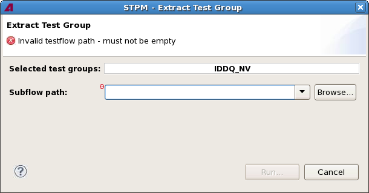

Extract Test Group dialog
The Extract Test Group dialog lets you extract test groups from a test program into a subflow by executing the extract_subflow control file command.
The command is executed with its default settings. If other settings are desired, the Extract Subflow dialog can be used.

The dialog is opened by the Extract Selected [Quick] command from the STPM menu. It contains these fields and options:
- Content error message: The message at the top of the dialog, just below the title,
notifies you of any errors or warnings caused by your settings, for example, an empty testflow
path:
- : This icon indicates an error. The error is noted in the message, and the offending field or option is marked with the same icon. The Run button is disabled until the problem is resolved.
- : This icon indicates a warning. The problem is noted in the message, and the offending field or option is marked with the same icon. You can, however, still click Run to execute the command with this setting.
- Selected Test Groups: The test groups that you have selected in the
testflow before choosing this command. These test groups will be extracted from the loaded test
program into an external subflow. (This means that the loaded test program must be the
MTP.)
This field corresponds to the test_groups parameter of the extract_subflow command.
- Subflow path:The name and path of the testflow file for the test
program that is generated from the exported test groups.
Clicking Browse lets you choose a testflow file from disk.
This field corresponds to the test_flow_file parameter of the extract_subflow command.
- Run: Clicking this button performs the extract operation with the default settings. The progress of the command is displayed in the STPM console view which is automatically opened.
Functional changes
- Introduced in SmarTest 7.2.2